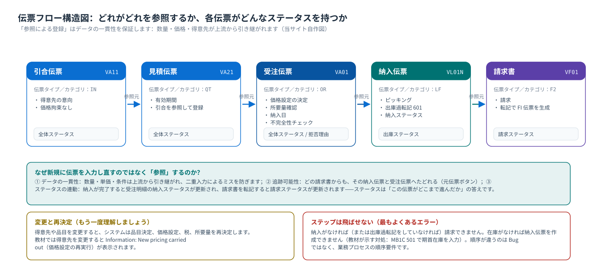
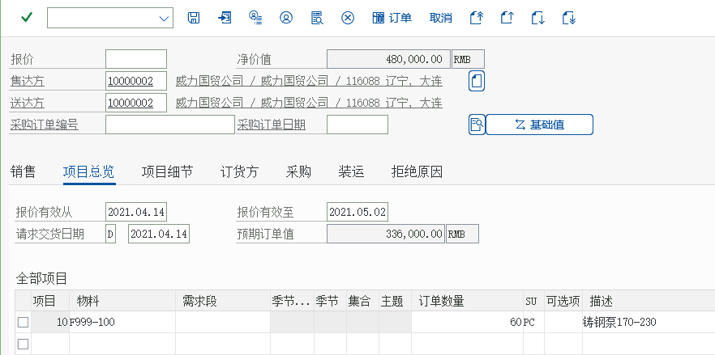
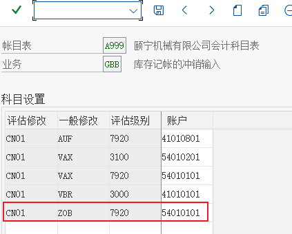

プロセス ① 受注伝票処理（部分詳解）
引合 VA11 · 見積 VA21 · 受注伝票 VA01 · 参照登録 · 所要量確認 · ステータス
1. 3 つの先行伝票の位置2. 見積：まず得意先に価格を提示する3. 受注伝票：見積を参照して登録4. 受注画面の項目ごとの読み方5. 在庫が不足したらどうするか6. 保存後に何を見るか7. 練習とセルフチェック
1. 3 つの先行伝票の位置づけ
受注伝票は必ずしも引合/見積から来る必要はありませんが、「参照登録」が標準的なやり方です：データを再入力せずに済み、出所まで追跡できます。
{kind=link}

| 伝票 | T-code | いつ使うか | 教材のシナリオ |
|---|---|---|---|
引合 VA11 | IN | 得意先が問い合わせているだけで、まだ購入は確定していない | 教材ではステップごとの実演がないため、当サイトで標準プロセスに沿って説明を補足 |
見積 VA21 | QT | 正式な価格提示。有効期間を含められる | 教材タスク 40：远东造船厂向けに铸钢泵 170-230 を 30 件見積もる |
受注伝票 VA01 | OR | 得意先が注文を確定する | 教材タスク 41：見積をひな形として正式な受注伝票を作成 |
「参照」の 3 つの入口
- 見積で「後続機能 → V-01 受注」をクリック（教材で使っているのはこのルート）；
VA01で受注タイプを入力し、「参照」エリアに見積番号を入力して Enter；- 一覧（
VA25見積一覧）で選択してから後続伝票を登録します。
2. 見積：まず得意先に価格を提示
教材タスク 40「見積の登録」のシナリオ：远东造船厂が铸钢泵 170-230 を 30 件購入したいと考え、販売組織が先に見積を出します。
教材のメニューパス（見積の登録）ロジスティクス → 販売管理 → 販売 → 見積 → VA21-登録
原教材の中国語パス
后勤 → 销售和分销 → 销售 → 报价 → VA21-创建

{kind=link}

| 見積画面の重要項目（教材環境での実測値） | 概要 |
|---|---|
| 見積伝票タイプ | QT（Quotation） |
| 組織データ | C999 颐宁销售 / Z1 直販 / Z1 铸钢泵 —— 販売エリアがどの計算スキーマと条件レコードを使うかを決めます |
| 品目と数量 | F999-100 铸钢泵 170〜230 |
| 価格 | 条件レコード PR00 から取得される（8,000.00 RMB／PC）。手入力ではない |
3. 受注伝票：見積を参照して登録
得意先の確認後、見積から受注伝票へ進みます。教材のパスは「ロジスティクス → 販売管理 → 販売 → 見積 → 後続機能 → V-01-受注」で、その後、画面で「参照して登録」をクリックします。
教材のメニューパス（受注伝票の登録）ロジスティクス → 販売管理 → 販売 → 見積 → 後続機能 → V-01-受注
原教材の中国語パス
后勤 → 销售和分销 → 销售 → 报价 → 后继功能 → V-01-订单


参照登録で何が引き継がれるか得意先、品目、数量、価格条件、条件などがすべて引き継がれ、変更することもできます。引き継いだ後に得意先を変更すると、システムは価格設定の再実行を促します（教材では Information: New pricing carried out が表示されました）——価格は得意先に依存するためです（条件レコードのキーに得意先が含まれます）。
4. 受注画面の項目ごとの読み方（ヘッダ → 明細 → ステータス → 条件）
| エリア | 項目 | 意味／出所 |
|---|---|---|
| ヘッダ | 受注タイプ | この受注伝票がどう流れるかを決定（教材では OR 標準受注伝票） |
| ヘッダ | 販売エリア（販売組織 / 流通チャネル / 製品部門） | 得意先マスタから引き継がれ、計算スキーマと条件レコードの範囲を決定 |
| ヘッダ | 受注先／出荷先／請求先／支払先 | 4 つのパートナ役割。出荷先が納入先を決定 |
| ヘッダ | 得意先参照 / 購買発注番号 | 得意先の PO 番号。照合に使用（現場で最も入力を求められる） |
| ヘッダ | 受注日 / 要求納入日 | 業務上の希望日（システムが確定した日付とは異なります） |
| 明細 | 品目 + 数量 + 販売単位 | 明細カテゴリは「伝票タイプ + 品目（明細カテゴリグループ）」で決定されます |
| 明細 | プラント | どのプラントから出荷するかを決定（品目マスタ＋輸送条件から導出） |
| 明細 | 納入日 / 確認数量 | 所要量確認（ATP）の結果 —— 業務で本当に見るべき日付 |
| 明細 | 条件（価格） | 計算スキーマの行ごとの結果：単価、割引、税、小計（正味価額） |
| ステータス | 全体ステータス / 納入ステータス / 請求ステータス | この伝票がどこまで進んだかを判断 |
まずどの項目を見る？現場で問題に対処するときの順序：ステータス → 納入日/確認数量 → 条件（価格）→ 明細カテゴリ。価格に問題があるときだけ条件タブを見ます。納期に問題があるときは確認タブを見ます。
5. 在庫不足のときどうするか（教材の実際のメッセージ）

ここには2つの要点があります
- 所要量確認（ATP）は保存を阻止しない：標準では確認日を示すだけ。保存を阻止するかどうかは設定によります（多くの企業では「納入時に厳格にチェック」と設定したり、重要得意先にブロックを追加したりします）。
- 在庫の補充には正しい移動タイプを使う：教材では
MB1C+ 移動タイプ 501（発注伝票なしの入庫）期首在庫を入力します。生産入庫は通常 101、購買入庫も（購買発注に対して）101 です。
移動タイプは「この在庫変動をどの業務として扱うか」を決定します。間違えると原価やレポートに影響します。
{kind=link}

6. 保存後に何を見るか
- 受注番号を取得します（これが以降すべての工程の入口です）。
- 受注伝票のヘッダに戻ります：全体ステータス、明細ステータス（納入ステータス／請求ステータス）。
- 「環境 → 伝票フローの照会」：受注伝票が伝票フローに入ったことを確認します（その後、納入と請求書が生成されます）。
VA05受注一覧：自分の一覧に表示されることを確認します（教材タスク 46）。- MTO シナリオの場合：
MD04で所要量が生成済みかを確認します（当サイトのプロセスページの統合ポイント）。
7. 練習とセルフチェック
セルフチェックの質問
- なぜ受注伝票で価格と得意先住所が自動的に表示されるのですか？（ヒント：マスタ + 設定）
- 「要求納入日」と「納入日の確定」のうち、システムが算出するのはどちらですか？
- 受注伝票の保存時に可用在庫なしと表示されたら、業務ではどうすべきですか？技術的な対処は何ですか？
- 受注伝票で得意先を変更したとき、なぜ再価格設定が必要ですか？
- 次ページ：納入 —— 実際に商品を出荷します。
- 実習タスク：タスク 2 見積 → 受注。